4
The power of cleanliness
You have understood
that cleanliness is
important for a healthy
life, haven’t you? Please
ask if you have
any doubt.
The doctor handled a class on personal hygiene for the students.
It was organised by the school parliament. The children asked
many doubts.
The doctor cleared all their doubts.
Let us read what Alan wrote in his notebook after participating
in the class.
There are chances that
our hands go dirty while
we play or do other
activities.
Germs will be
destroyed
when we wash our
hands with soap.
Page 56
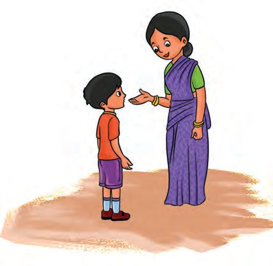
Figure fig_ch03_p056_01 (Page 56)
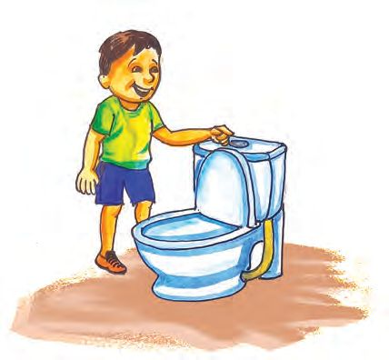
Figure fig_ch03_p056_02 (Page 56)
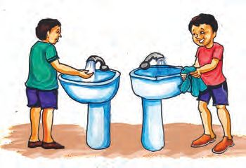
Figure fig_ch03_p056_03 (Page 56)
You just came from
the school. Go and
wash your hands
and face with soap.
Why does the teacher
tell us to wash our
hands with soap after
using the toilet?
Have you seen the pictures ?
On what occasions should we wash and clean our hands with soap?
l
l
l
l
l
Before eating food
After eating food
After using the toilet
After traveling
l
Clean hands
Friends, are your hands clean?
Shall we check?
Take a bucket of water. Take a glass of water from it and keep it
on the table.
56
Page 57
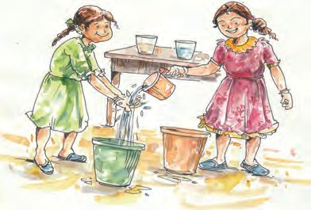
Figure fig_ch03_p057_01 (Page 57)
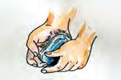
Figure fig_ch03_p057_02 (Page 57)
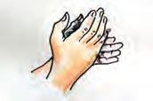
Figure fig_ch03_p057_03 (Page 57)
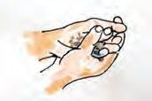
Figure fig_ch03_p057_04 (Page 57)
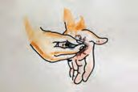
Figure fig_ch03_p057_05 (Page 57)
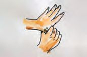
Figure fig_ch03_p057_06 (Page 57)
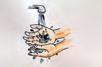
Figure fig_ch03_p057_07 (Page 57)
Take an empty bucket to collect water used for hand washing. Let
the students wash their hands into the bucket.
After everyone has washed, take
a glass of water from the hand
washing bucket, and place it near
the other glass of water already
kept there. Compare the water in
both glasses.
What is your finding?
How do you wash your hands now?
How should you wash your hands to make them clean?
Observe the various stages of hand washing illustrated in the
picture.
1. Wet hands and apply the soap.
2. Rub palms together and clean them.
3. Clean back of your hands and between
the fingers.
4. Rub the nails and the finger tips on the palm
to clean them.
5. Clean the fingers and wrists by rubbing them
in a circular way using the other hand.
6. Wash hands properly in pure water and wipe
them with clean cloth.
57
Page 58
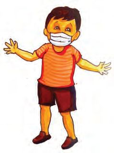
Figure fig_ch03_p058_01 (Page 58)
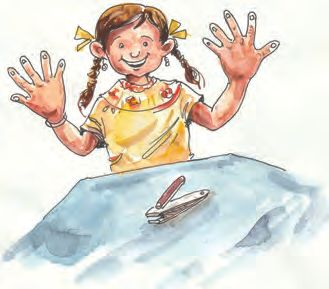
Figure fig_ch03_p058_02 (Page 58)
See, my hands
are clean. I have
trimmed
and cleaned
my nails.
You should trim and clean the nails to make your hand perfectly
tidy. Otherwise, the dirt that piled up under the nails will reach
your stomach with food.
Alan has written down the ideas that the doctor gave his fellow
students. Let us read.
You should brush and
clean your teeth in
the morning and after
dinner. The teeth will get
damaged otherwise.
Do not wear dirty or wet
clothes. Germs will grow
in them. You will catch
diseases like scabies and
rash.
Why should we wear masks?
Alan forgot to write the
answer for this question.
Can you help him?
58
Page 59
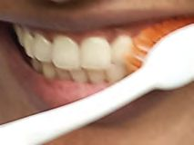
Figure fig_ch03_p059_01 (Page 59)
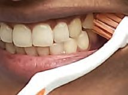
Figure fig_ch03_p059_02 (Page 59)
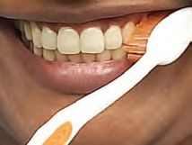
Figure fig_ch03_p059_03 (Page 59)
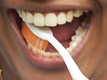
Figure fig_ch03_p059_04 (Page 59)
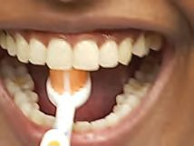
Figure fig_ch03_p059_05 (Page 59)
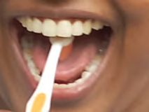
Figure fig_ch03_p059_06 (Page 59)
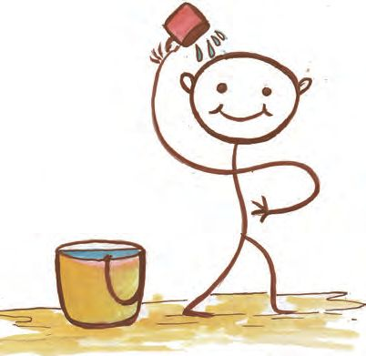
Figure fig_ch03_p059_07 (Page 59)
Clean teeth
You know the importance of cleaning your teeth, don’t you?
Do we brush our teeth properly?
Observe the pictures.
Hold the
brush slanted.
Brush forward and
backwards.
Brush the upper
teeth from top to
bottom and the
lower teeth from
bottom to top.
Brush the surface of
the teeth used for
chewing forward and
backwards properly.
Brush the inner
side of teeth.
Clean the tongue
with the brush.
Present the effective method of cleaning teeth, in the class.
Clean body
Bathing is essential to clean our body.
Can you present the way you bathe using
actions?
What should we keep in mind when we
take a bath?
l
l
Take a bath daily
Wash and clean body
parts properly with soap
59
Page 60
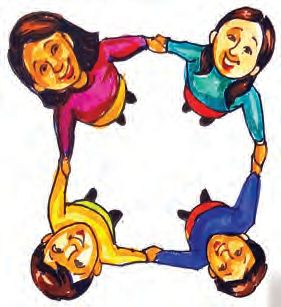
Figure fig_ch03_p060_01 (Page 60)
l
l
l
l
Do not bathe in dirty water
Use a dry and clean towel to dry your body.
Do not use other’s towel
Wash and dry the towel after use
Have you understood the proper ways of washing hands, brushing
teeth and bathing.
Please discuss what you have understood about personal hygiene
with family members.
Lack of personal hygiene is the reason for many diseases.
Dysentery, cold, scabies, rash, etc. are some of these diseases.
We can keep many diseases away if we maintain hygiene.
The decisions I must take to maintain
personal hygiene
My hygiene
My responsibility
60
Page 61
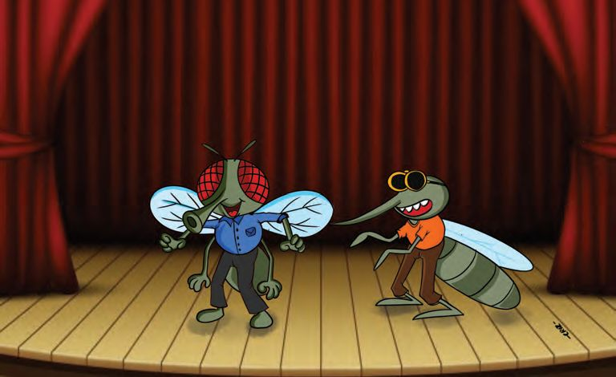
Figure fig_ch03_p061_01 (Page 61)
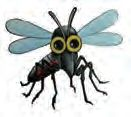
Figure fig_ch03_p061_02 (Page 61)
Environmental Cleanliness
Now let us play a skit.
Characters:- House fly, Mosquito, Rat.
Scene One: House fly and mosquito meet.
Mosquito : Hello Mr. Fly, do you know me?
House Fly : Ha ha ha! Of course I know you.
You are the brave one who drinks the blood of humans,
aren’t you? I am happy to meet you brother, you spread
many diseases.
Mosquito : Yes! Many diseases like chikungunya, dengue fever,
malaria and elephantiasis are spread among humans
because of me. It makes me very sad. But what can I
do?
House Fly : Where do you live, brother?
Mosquito : In this city itself. There is a house with waste piled up
near the sewage drain. There are places which filled
with dirty water. We lay eggs there, multiply and take
over the place.
61
Page 62
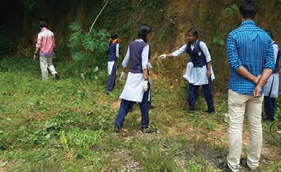
Figure fig_ch03_p062_01 (Page 62)
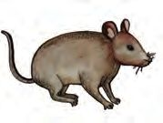
Figure fig_ch03_p062_02 (Page 62)
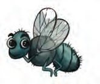
Figure fig_ch03_p062_03 (Page 62)
Similarly, what would the house fly
and the rat have to say to each other?
Complete their conversation and
present it in the class.
Who are the characters in this skit?
What are the situations in which they multiply?
What are the problems that they create for humans?
Our house and surroundings should be clean if we want to
live healthy. Mosquitoes, flies and rats multiply in places that
are not clean. Many diseases spread due to these creatures.
With the aim of preventing
communicable diseases, dry day
activities were conducted in all
the wards under the leadership of
the Grama Panchayats. Cleaning
activities were carried out
with a view to eliminating the
disease-carrying mosquitoes,
as dengue fever was reported
in some wards of the panchayat.
Have you read the Newspaper report? What are dry day activities?
Read the information provided.
Dry Day
There are chances for abandoned containers, coconut shells, tyres,
bottles, bottle caps and toys in our surroundings to store water.
Mosquitoes may lay their eggs in these. They will hatch and reach
full growth in eight days. Therefore, in every seven days, the water
collected in such objects should be drained and the objects that
62
Page 63
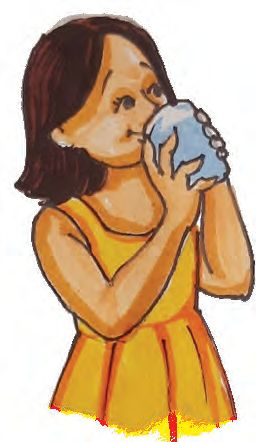
Figure fig_ch03_p063_01 (Page 63)
can collect water should be removed. This cleaning process is
called dry day.
Diseases can spread through water
There is chance to catch diseases through the dirty water stored
in our surroundings and the unclean water that we drink.
Dysentery, jaundice, cholera, typhoid, and other diseases are
spread through water.
What precautions can we take to prevent these diseases?
l
l
Use boiled and cooled water for drinking
l
Treatment through
drinking fluids
The water content in our body is lost
when we get dysentery. The water
content should be restored in the body.
Patients can be given the following.
l
l
l
l
Salted rice water
Lime juice with salt and sugar added
Salted buttermilk
Coconut water
The ORS obtained from the Public Health
Centre should be mixed in boiled and
cooled water and given frequently.
63
Page 64
Figure fig_ch03_p064_01 (Page 64)
My school, clean school
What is special about this school?
Is our school clean and neat? Let us assess.
My school
Waste is not piled up
School
surroundings
Waste water is not accumulated
No plastic waste
Bins for sorting and
depositing waste
64
Put
Page 65
There are no cobwebs/
waste
Classroom
Kitchen
School urinal
and toilet
Learning tools like
charts and others are
not dusty
There are bins
for sorting and depositing
waste
The utensils are clean
Waste water is not accumulated
Food waste is not
scattered around
Neat and clean
There is sufficient
water
What other aspects can be added in the table for observing other
places in the school like the playground, places for hand washing
and garden? Complete the table and present your findings. Which
places in our school have the waste deposited most?
Prepare a sketch of the school, mark the places with more waste
in red, less waste in yellow, and clean places in green.
What else can be done to make it cleaner?
Let us participate in the cleaning activities.
Let us sort waste
You have seen Bins for sorting and depositing waste in the school,
haven’t you?
65
Why can’t we
collect all the
wastes in a single
bin?
Hazardous
waste
Why can’t we deposit all the waste
together ?
There is waste that decomposes in soil and waste that does
not. Waste that decomposes like food waste, vegetables, etc.
are called organic waste and waste that does not decompose
like plastic objects are called inorganic waste. Electronic
waste, bulbs, expired medicines, etc. are hazardous waste.
66
Converting food waste into manure
What can we do with the food waste in our home and school?
Compost pit
Deposit organic waste such as fruits,
vegetables, fish and food scraps in
a pit and cover it with soil. It will be
completely converted into manure
in three to four months time.
What are the methods used to
manage kitchen waste in your home
and school? Write them down.
Do not throw away plastic. Do not burn it.
Hey come on! Don’t
you remember what
we learned. We can’t
throw plastic like
that.
67
Page 68
Figure fig_ch03_p068_01 (Page 68)
Why do we say that we can’t throw away plastic objects?
l
l
l
What do you find in the picture?
What are the problems created by burning plastic?
68
Page 69
Figure fig_ch03_p069_01 (Page 69)
Discuss in class.
Plastic has become an unavoidable material in our lives. But if
it is thrown away into the surroundings or burned, it can cause
many health problems. The use of single-use plastic bags and
plastic bottles should be minimized. Plastic waste should not
be thrown away into the surroundings, but should be sorted
and handed over to the garbage collectors for recycling.
Let us assess
1. Sort the objects mentioned below and put them in the
appropriate waste bin.
PVC pipe, banana, pesticide bottles, vegetable waste, plastic
bottles,bulbs, food waste, medicines and plastic covers.
Inorganic
waste
Organic
waste
Hazardous
waste
2. Prepare an observation table to know whether your home
and surroundings are clean. Write down the steps you can
take to keep your home and surroundings clean, based on the
information in the table.
69
Page 70
Figure fig_ch03_p070_01 (Page 70)
Extended Activities
1. Make useful products such as decorative items, plants pots by
using papers, match boxes, broken bangles, bottle cap, pen,
plastic bottles, clothes, can, etc.
2. Design and conduct an experiment to know if food scraps or
plastic items rot in the soil. Prepare an experimental note.
70
Page 71
CONSTITUTION OF INDIA
Part IV A
FUNDAMENTAL DUTIES OF CITIZENS
ARTICLE 51 A
Fundamental Duties- It shall be the duty of every citizen of India:
(a) to abide by the Constitution and respect its ideals and institutions,
the National Flag and the National Anthem;
(b) to cherish and follow the noble ideals which inspired our national struggle
for freedom;
(c) to uphold and protect the sovereignty, unity and integrity of India;
(d) to defend the country and render national service when called upon to do so;
(e) to promote harmony and the spirit of common brotherhood amongst all the
people of India transcending religious, linguistic and regional or sectional
diversities; to renounce practices derogatory to the dignity of women;
(f) to value and preserve the rich heritage of our composite culture;
(g) to protect and improve the natural environment including forests, lakes, rivers,
wild life and to have compassion for living creatures;
(h) to develop the scientific temper, humanism and the spirit of inquiry and reform;
(i)
to safeguard public property and to abjure violence;
(j) to strive towards excellence in all spheres of individual and collective activity
so that the nation constantly rises to higher levels of endeavour and
achievements;
(k) who is a parent or guardian to provide opportunities for education to his child or,
as the case may be, ward between age of six and fourteen years.
Page 72
Figure fig_ch03_p072_01 (Page 72)
CHILDREN'S RIGHTS
Dear Children,
Wouldn’t you like to know about your rights? Awareness about your rights will inspire
and motivate you to ensure your protection and participation, thereby making social
justice a reality. You may know that a commission for child rights is functioning in our
state called the Kerala State Commission for Protection of Child Rights.
Let’s see what your rights are:
• Right to freedom of speech and
expression.
• Right to life and liberty.
• Right to maximum survival and
development.
• Right to be respected and accepted
regardless of caste, creed and colour.
• Right to protection and care against
physical, mental and sexual abuse.
• Right to participation.
• Protection from child labour and
hazardous work.
• Protection against child marriage.
• Right to know one’s culture and live
accordingly.
• Protection against neglect.
• Right to free and compulsory
education.
• Right to learn, rest and leisure.
• Right to parental and societal care,
and protection.
Major Responsibilities
• Protect school and public facilities.
• Observe punctuality in learning
and activities of the school.
• Accept and respect school
authorities, teachers, parents and
fellow students.
• Readiness to accept and respect
others regardless of caste, creed or
colour.
Contact Address:
Kerala State Commission for Protection of Child Rights
'Sree Ganesh', T. C. 14/2036, Vanross Junction
Kerala University P. O., Thiruvananthapuram - 34, Phone : 0471 - 2326603
Email: childrights.cpcr@kerala.gov.in, rte.cpcr@kerala.gov.in
Website : www.kescpcr.kerala.gov.in
Child Helpline - 1098, Crime Stopper - 1090, Nirbhaya - 1800 425 1400
Kerala Police Helpline - 0471 - 3243000/44000/45000
Online R. T. E Monitoring : www.nireekshana.org.in